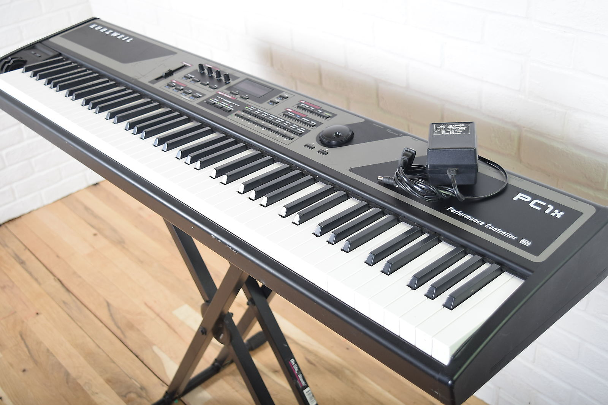

Zomervakantie
Tijdens de zomervakantie heb ik eigenlijk niets speciaals gedaan. Ik reisde niet naar buurlanden, ik had ook geen vakantiejob. Ik probeerde de tijd die ik vrij had te vullen door nieuwe hobby's te maken. De originele plannen voor de vakantie was dat mijn familie naar Rusland zouden reizen en ik en mijn zus alleen zouden blijven thuis, maar door corona ging dat niet door. Daarom heb ik geen foto's.
Vrienden
Tijdens de vakantie ging ik soms uit met vrienden. We gingen gaan bowlen, biljart spelen, fietsen en buiten uithangen. We gaan ook soms ergens gaan eten. Meestal bleven we thuis en zaten wij bijna elke dag, heel de dag te praten over dingen terwijl we spellen spelen.
Muziek

Ik heb een synthesizer in mijn kamer. Een synthesizer is zoals een piano, maar met meer geluidskeuzes. In het 3de leerjaar had mijn ma pianolessen van 1 van haar vriendinnen.
Ik werd dan geïnteresseerd en ging dan soms mee met haar om te zien hoe ze het doet. Een paar dagen later en ik kreeg dan de kans om de lessen mee te volgen. Ik volgde de lessen voor ongeveer
een jaar of 2, en dan ging ik weg. Ik had geen interesse meer in piano's, maar meer met snaarinstrumenten, zoals gitaren. In het begin van de lockdown, wou ik nog iets doen met muziek. Dus ik heb
de 8/9-jaar oude synthesizer uit de kelder gehaald. Ik weet alleen nog de basisregels van een piano, dus meestal probeer ik gewoon liedjes die ik goed vind na te spelen.
Ik had niet alleen interesse in fysieke instrumenten. Ik had ook zin om te leren hoe je een beat moet maken. Ableton, 1 van de beste softwares die je kunt gebruiken om een beat te maken,
hebben hun gratis proefperiode verlengt van 2 weken naar 6 maanden, omdat iedereen toen nog in zelf-quarantaine moest. Dus heb ik besloten om het uit te proberen. Na een paar dagen ermee
te werken, heb ik gerealizeerd dat het veel te moeilijk is om het te kunnen leren wanneer je niets van beats weet.
Fitness
Tijdens de lockdown waren fitnesscentra toen nog gesloten. Mijn plannen waren ook om naar de fitness te gaan met vrienden. Ik probeerde te trainen in de garage. Het was een paar weken gelukt,
totdat ik een pauze wou pakken van een paar dagen en daardoor ook gestopt ben.
Entertainment
Normaal gezien ben ik iemand die niet echt naar films of series kijkt. Maar omdat ik steeds mensen zie of hoor die steeds praten over hun meningen over shows die ze kijken op Netflix, en dat
ik dan toch alle tijd had, heb ik besloten om een paar shows en films te bekijken. Ik ben begonnen met de show "Euphoria" van HBO, een drama-series die gaat over tieners die vroeg beginnen met drugs.
Ik vond het een zeer interessante series, maar ze hadden maar 1 seizoen, dus ik eindigde er snel mee. Dan ben ik begonnen met "The End of The F**cking World" te kijken op Netflix met vrienden.
Nog een drama-serie, met een beetje humor erin.
Ik heb ook met vrienden een paar films bekeken, maar dan online. De laatste film dat we bekeken tijdens de vakantie was 1917, een oorlogsfilm dat leek alsof het in 1 take (geen cuts) werd gefilmd.